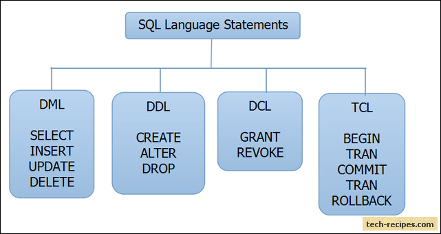

Bismillaahir-rahmaanir-rahiym

Halaman Github Untuk Belajar HTML, CSS, dan JavaScript
test wow
Hijab dengan jilbab
Berjilbab yang benar bukan hanya menutup rambut kepala. Tetapi juga harus memperhatikan baju dan rok yang digunakan, mestilah lebar. Adapun menggunakan celana panjang tidaklah menggambarkan menutup aurat dengan sempurna meski longgar karena bentuk lekuk tubuh masih terlihat. Jadi yang aman bagi wanita adalah menggunakan baju atau gamis lalu ditutupi dengan jilbab yang lebar di luarnya yang panjangnya hingga pinggang atau paha sehingga lebih menutupi sempurna bagian badan. Kemudian bagian bawah lebih sempurna menggunakan rok yang lebar (longgar), tidak ketat. Rok tersebut hingga menutupi kaki. Adapun panjang rok tersebut sebagaimana disebutkan dalam hadits Ummu Salamah berikut ini.
عَنِ ابْنِ عُمَرَ قَالَ قَالَ رَسُولُ اللَّهِ -صلى الله عليه وسلم- مَنْ جَرَّ ثَوْبَهُ خُيَلاَءَ لَمْ يَنْظُرِ اللَّهُ إِلَيْهِ يَوْمَ الْقِيَامَةِ فَقَالَتْ أُمُّ سَلَمَةَ فَكَيْفَ يَصْنَعْنَ النِّسَاءُ بِذُيُولِهِنَّ قَالَ « يُرْخِينَ شِبْرًا ». فَقَالَتْ إِذًا تَنْكَشِفَ أَقْدَامُهُنَّ. قَالَ فَيُرْخِينَهُ ذِرَاعًا لاَ يَزِدْنَ عَلَيْهِ
Dari Ibnu ‘Umar, ia berkata bahwa Rasulullah shallallahu ‘alaihi wa sallam bersabda, “Siapa yang menjulurkan pakaiannya (di bawah mata kaki) karena sombong, maka Allah pasti tidak akan melihat kepadanya pada hari kiamat.” Ummu Salamah lantas berkata, “Lalu bagaimana para wanita menyikapi ujung pakaiannya?” Nabi shallallahu ‘alaihi wa sallam menjawab, “Hendaklah mereka menjulurkannya sejengkal.” Ummu Salamah berkata lagi, “Kalau begitu, telangkap kakinya masih tersingkap.” Beliau shallallahu ‘alaihi wa sallam bersabda, “Turunkan satu hasta, jangan lebih dari itu.“(HR. Tirmidzi no. 1731 dan An Nasai no. 5338. At Tirmidzi mengatakan bahwa hadits ini hasan shahih. Al Hafizh Abu Thohir mengatakan bahwa sanad hadits ini shahih)
Pelajaran yang bisa kita petik dari penjelasan ulama Syafi’iyah di atas, punggung dan bagian dalam telapak tangan bukanlah aurat yang mesti ditutupi, wallahu a’lam.
Sumber : https://rumaysho.com/8452-aurat-wanita-menurut-madzhab-syafii.html
Cara Mengangkat Tangan Ketika Berdoa
Ada di antara adab dalam berdoa yang diajarkan oleh Nabi shallallahu ‘alaihi wa sallam yaitu mengangkat kedua tangan. Seperti yang disebutkan dalam hadits berikut ini.
Dari Abu Hurairah radhiyallahu ‘anhu, Nabi shallallahu ‘alaihi wa sallam bersabda,
ثُمَّ ذَكَرَ الرَّجُلَ يُطِيلُ السَّفَرَ أَشْعَثَ أَغْبَرَ يَمُدُّ يَدَيْهِ إِلَى السَّمَاءِ يَا رَبِّ يَا رَبِّ وَمَطْعَمُهُ حَرَامٌ وَمَشْرَبُهُ حَرَامٌ وَمَلْبَسُهُ حَرَامٌ وَغُذِىَ بِالْحَرَامِ فَأَنَّى يُسْتَجَابُ لِذَلِكَ
“Kemudian Nabi shallallahu ‘alaihi wa sallam menceritakan tentang seroang laki-laki yang telah lama berjalan karena jauhnya jarak yang ditempuhnya. Sehingga rambutnya kusut, masai dan berdebu. Orang itu mengangkat tangannya ke langit seraya berdo’a: “Wahai Tuhanku, wahai Tuhanku.” Padahal, makanannya dari barang yang haram, minumannya dari yang haram, pakaiannya dari yang haram dan diberi makan dengan makanan yang haram, maka bagaimanakah Allah akan memperkenankan do’anya?” (HR. Muslim, no. 1015)
Bagaimanakah cara mengangkat tangan tersebut?
Ada dua cara mengangkat tangan ketika berdoa secara umum yang disebutkan oleh Ibnu Rajab Al-Hambali:
Pertama, mengangkat tangan dengan menjadikan bagian punggung telapak tangan diarahkan ke arah kiblat, sambil yang berdoa menghadap kiblat, sedangkan bagian dalam telapak tangannya diarahkan ke arah wajah. Riwayat cara ini adalah dari contoh doa istisqa yang dipraktikkan oleh Nabi shallallahu ‘alaihi wa sallam.
Kedua, mengangkat kedua tangan dengan menjadikan bagian dalam telapak tangan dihadapakan ke langit, lantas punggung telapak tangan dihadapkan ke bumi. Ada riwayat seperti dari Ibnu ‘Umar, Abu Hurairah, dan Ibnu Sirin.
Lihat Jami’ Al-‘Ulum wa Al-Hikam karya Ibnu Rajab Al-Hambali, 1: 271-272, Penerbit Muassasah Ar-Risalah.
Semoga bermanfaat.
Sumber : https://rumaysho.com/15367-dua-cara-mengangkat-tangan-ketika-berdoa.html
Rumah Seperti Kuburan
Jangan jadikan rumah kita seperti kuburan. Bagaimanakah rumah yang seperti kuburan itu? Rumah tersebut tidak pernah dikerjakan shalat di dalamnya, baik shalat wajib maupun sunnah. Rumah tersebut selalu lalai dari bacaan Al Qur’an. Itulah rumah yang seperti kuburan.
Dari Abu Hurairah, Nabi shallallahu ‘alaihi wa sallam bersabda,
لاَ تَجْعَلُوا بُيُوتَكُمْ مَقَابِرَ إِنَّ الشَّيْطَانَ يَنْفِرُ مِنَ الْبَيْتِ الَّذِى تُقْرَأُ فِيهِ سُورَةُ الْبَقَرَةِ
“Janganalah jadikan rumah kalian seperti kuburan karena setan itu lari dari rumah yang didalamnya dibacakan surat Al Baqarah.” (HR. Muslim no. 1860)
Syaikh Muhammad bin Sholeh Al ‘Utsaimin berkata,
Para ulama menjelaskan bahwa maksudnya adalah janganlah meninggalkan shalat di rumah. Artinya, rumah yang tidak ada shalat di dalamnya disebut kuburan. Karena shalat tidaklah sah dilakukan di kuburan sebagaimana disebutkan dalam hadits,
الأَرْضُ كُلُّهَا مَسْجِدٌ إِلاَّ الْمَقْبُرَةَ وَالْحَمَّامَ
“Seluruh permukaan bumi adalah masjid kecuali kuburan dan tempat pemandian.“[1]
Dari Abu Martsad Al Ghonawi, beliau berkata bahwa Rasulullah shallallahu ‘alaihi wa sallam bersabda,
لاَ تُصَلُّوا إِلَى الْقُبُورِ وَلاَ تَجْلِسُوا عَلَيْهَا
“Janganlah shalat menghadap kubur dan janganlah duduk di atasnya.”[2]
Shalat sunnah maupun shalat wajib tidak sah dilakukan di kuburan, begitu pula untuk sujud tilawah dan sujud syukur. Tidak boleh ada shalat yang dilakukan di kuburan kecuali satu shalat saja yaitu shalat jenazah. Jika shalat jenazah dilakukan di area pekuburan, maka tidaklah masalah baik setelah penguburan maupun setelahnya. Namun untuk setelah penguburan, tidak boleh dilakukan pada waktu terlarang (untuk shalat). Misalnya, ada orang yang baru datang menghadiri jenazah namun ternyata telah dikubur, dan waktu saat itu adalah setelah ‘Ashar, maka shalat tidak boleh dilakukan saat itu. Hendaklah dipilih waktu lain untuk dilaksanakan shalat jenazah, seperti waktu Dhuha. Adapun jika seseorang datang, sedangkan jenazah belum dikuburkan namun baru diletakkan di area pekuburan, maka tidak mengapa melakukan setelah Ashar saat itu karena saat itu dilakukan punya sebab. Shalat yang punya sebab tidak mengenal waktu terlarang. (Syarh Riyadhis Sholihin, 4: 683-684).
Sumber : https://rumaysho.com/6836-rumah-yang-seperti-kuburan.html
Manfaat
Beri manfaat untuk orang banyak ataukah diri sendiri lebih dahulu?
Ini kaedah fikih yang disebutkan oleh Imam As-Suyuthi dalam Al-Asybah wa An-Nazhair pada kaedah ke-20. Beliau menyatakan,
المُتَعَدِّي أَفضَلُ مِنَ القَاصرِ
“Amalan yang manfaatnya untuk orang banyak lebih utama daripada yang manfaatnya untuk segelintir saja.”
Imam Asy Syafi’i rahimahullah juga mengatakan,
طَلَبُ الْعِلْمِ أَفْضَلُ مِنْ صَلَاةِ النَّافِلَةِ
“Menuntut ilmu itu lebih utama dari shalat sunnah.”
Namun tidak semua amalan yang bermanfaat untuk orang banyak lebih afdhal. Ada amalan yang sifatnya individu dipandang lebih utama. Seperti disebutkan dalam hadits berikut.
عَنْ أَبِي هُرَيْرَةَ رَضِيَ اللَّهُ عَنْهُ , عَنِ النَّبِيِّ صَلَّى اللَّهُ عَلَيْهِ وَسَلَّمَ , أَنَّهُ سُئِلَ ” أَيُّ الأَعْمَالِ أَفْضَلُ ؟ قَالَ : إِيمَانٌ بِاللَّهِ وَرَسُولِهِ . قِيلَ : ثُمَّ مَاذَا ؟ قَالَ : ثُمَّ الْجِهَادُ فِي سَبِيلِ اللَّهِ . قِيلَ : ثُمَّ مَاذَا ؟ قَالَ : ثُمَّ حَجٌّ مَبْرُورٌ
Dari Abu Hurairah radhiyallahu ‘anhu, Nabi shallallahu ‘alaihi wa sallam pernah ditanya, “Amalan apakah yang paling afdhal?” Jawab Nabi shallallahu ‘alaihi wa sallam, “Iman pada Allah.” Kemudian beliau ditanya, “Terus apa lagi?” Jawab Nabi shallallahu ‘alaihi wa sallam, “Jihad di jalan Allah.” Kemudian beliau ditanya, “Terus apa lagi?” Jawab Nabi shallallahu ‘alaihi wa sallam, “Haji mabrur.” (HR. Bukhari, no. 47; Muslim, no. 83)
Dalam hadits lain disebutkan bahwa shalat adalah sebaik-baik amalan. Dari Tsauban radhiyallahu ‘anhu, ia berkata bahwa Rasulullah shallallahu ‘alaihi wa sallam bersabda,
وَاعْلَمُو border="1px solid"ا أَنَّ خَيْرَ أَعْمَالِكُمُ الصَّلاةُ , وَلا يُحَافِظُ عَلَى الْوُضُوءِ إِلا مُؤْمِنٌ
“Ketahuilah bahwa sebaik-baik amalan kalian adalah shalat. Tidaklah yang menjaga wudhu kecuali seorang mukmin.” (HR. Ibnu Majah, no. 277; Ahmad, 5: 280. Al-Hafizh Abu Thahir mengatakan bahwa hadits ini hasan)
Namun Imam Ghazali rahimahullah mengungkapkan bahwa dalam kitabnya Al-Ihya’ bahwa sebaik-baik ketaatan tergantung pada waktunya masing-masing.
Semoga bermanfaat.
Referensi:
Al-Asybah wa An-Nazhair fi Qawa’id wa Furu’ Asy-Syafi’iyyah. Cetakan kelima, tahun 1432 H. Jalaluddin ‘Abdurrahman As-Suyuthi. Penerbit Darus Salam.
—
@ Studio DS, 15 Dzulhijjah 1437 H
Oleh: Muhammad Abduh Tuasikal
Sumber : https://rumaysho.com/14342-manfaat-untuk-orang-banyak.html
Pada HTML jumlah spasi hanya dihitung satu kali
dan enter pada karakter diabaikan.
strong
bold
italic
emphasize
marked
deleted
small
inserted
subscript
superscript
HTML adalah bahasa markup yang akan diparsing pada browser
Secara otomatis dikutip
-2017
Alamat: Jl. Sukamaju, Kel. Jaya, Kec. Mantap
Tukang Ketik 2017
Kenapa harus menggunakan tag yang berbeda untuk hasil yang visual sama?
Karena menempatkan informasi tentang data sesuai tag memudahkan pengelompokkan informasi dkhususnya di search engine dalam membaca data
Tertampil di browser sebagai karakter yang ditampilkan dari kanan ke kiri
a = "tukang kode";
print(a);
File | Open...
Not Found
The requested URL /meong.php was not found on this server.
Apache/2.4.7 (Ubuntu) Server at 127.0.0.2 Port 80
browser


SQL adalah
Structured Query Language yaitu sebuah bahasa yang digunakan untuk berkomunikasi dengan database.
x = 10
y = 2
print(x+y)
memberi warna dengan nilai heksa
memberi warna dengan fungsi rgb
The CSS box model is essentially a box that wraps around every HTML element. It consists of: borders, padding, margins, and the actual content.
This text is the actual content of the box. We have added a 25px padding, 25px margin and a 25px green border. Ut enim ad minim veniam, quis nostrud exercitation ullamco laboris nisi ut aliquip ex ea commodo consequat. Duis aute irure dolor in reprehenderit in voluptate velit esse cillum dolore eu fugiat nulla pariatur. Excepteur sint occaecat cupidatat non proident, sunt in culpa qui officia deserunt mollit anim id est laborum.
A dotted outline
A dashed outline
A solid outline
A double outline
A groove outline
A ridge outline
An inset outline
An outset outline
Note: IE8 supports the outline properties only if a !DOCTYPE is specified.
This is heading 1
This is an ordinary paragraph. Notice that this text is blue. Sintaks color mengubah warna teks. Sementara text-align akan mengubah perataan teks.
Setelah ini lebih baik lihat di internal style.